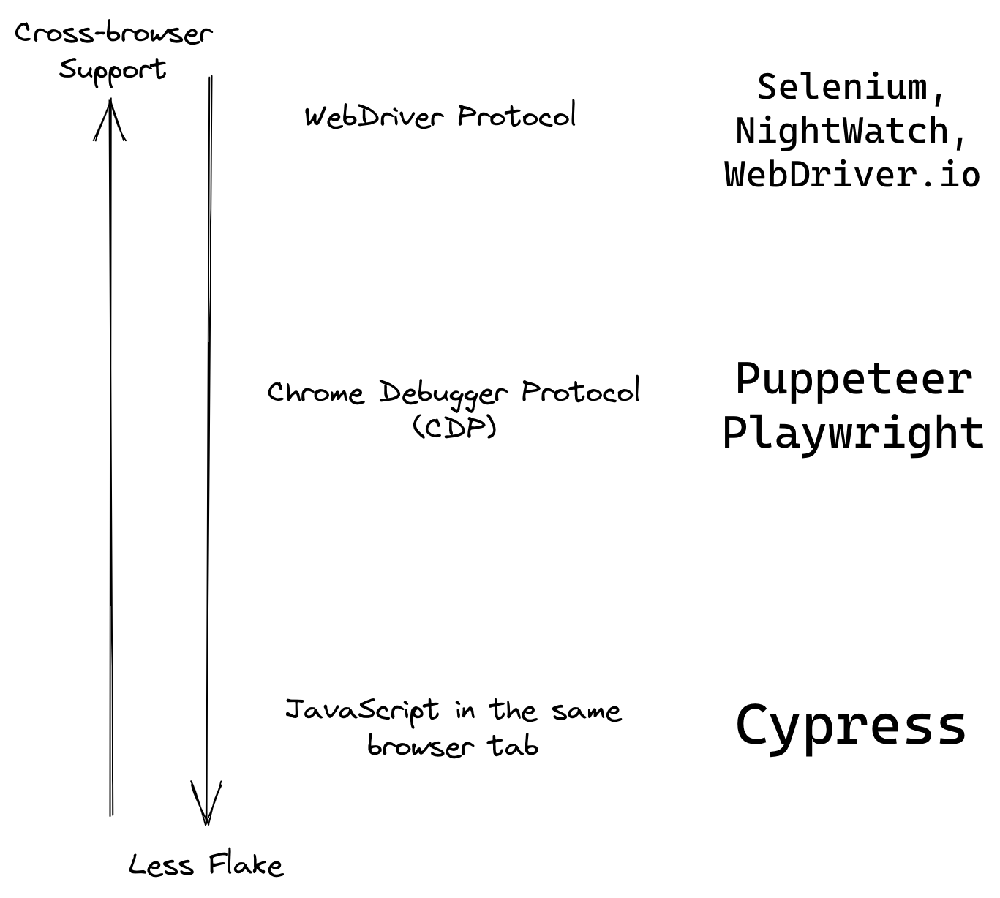
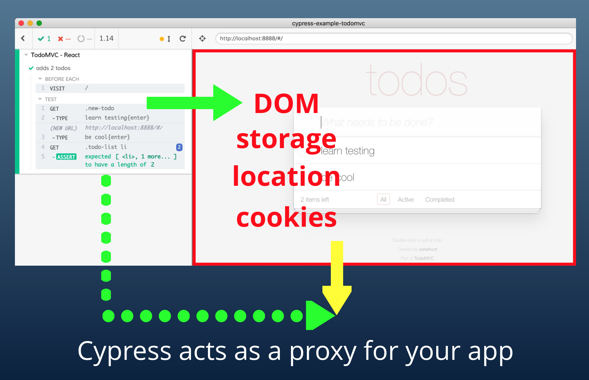
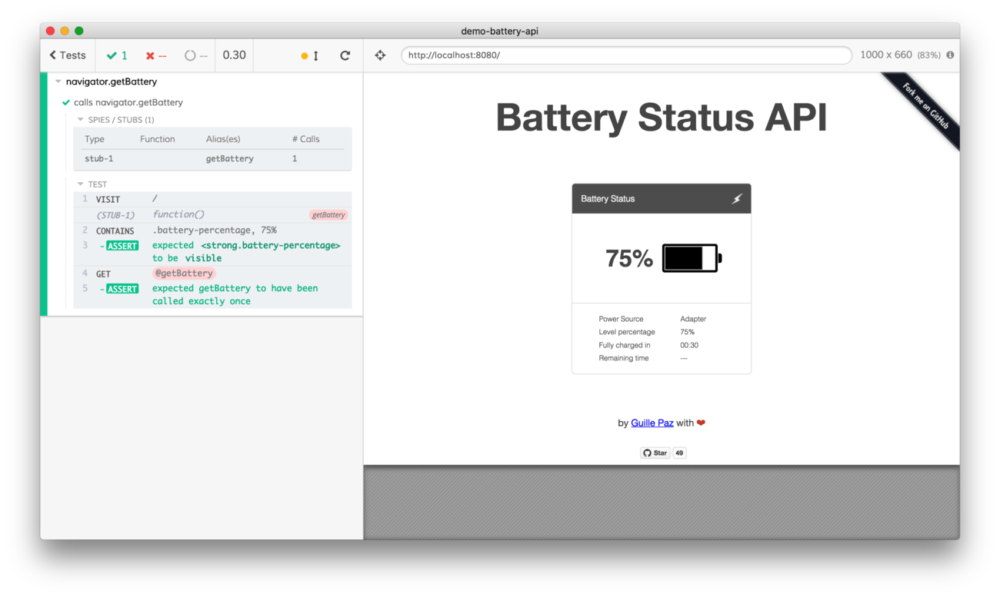
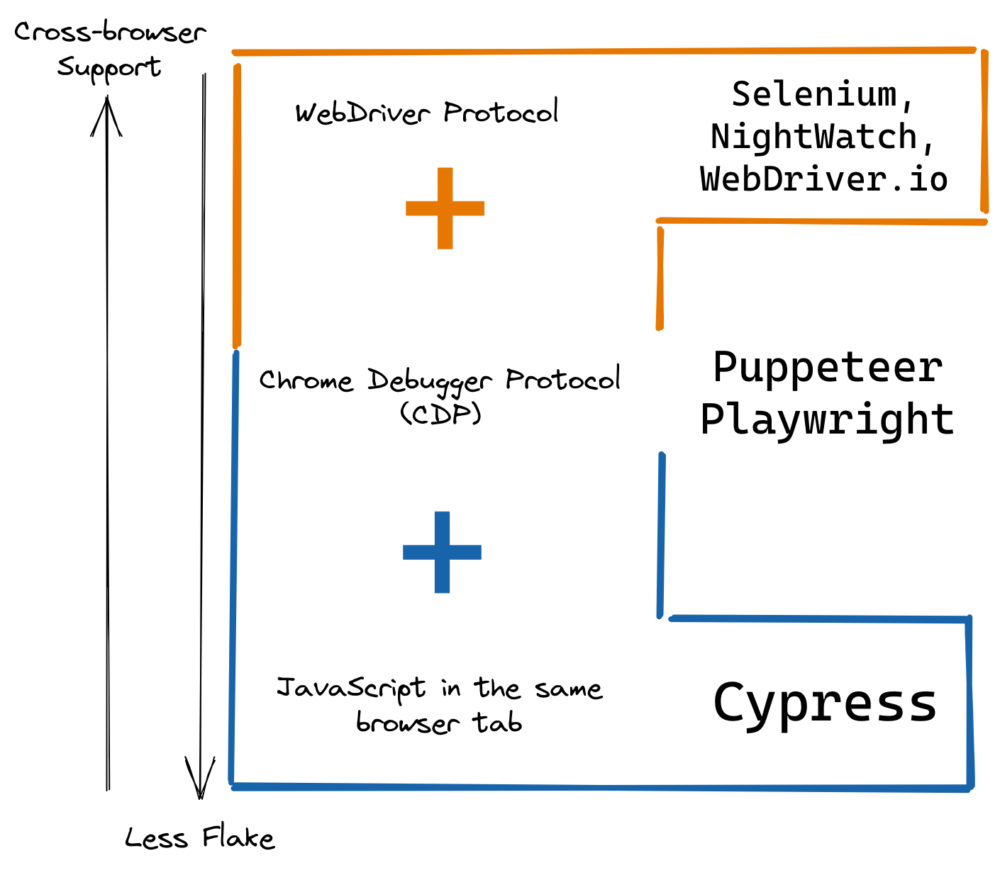

Note: the diagram in this blog post is similar to the diagram used by Rainer Hahnekamp in his presentation Angular & Cypress.
The browser automation end-to-end (E2E) test runners are very different in their architecture. I think they can broadly be categorized in three categories depending on how they communicate and control the browser and the application under the test.

WebDriver protocol is a HTTP JSON protocol that sends the commands from the test runner to the browser, see 1. The most important part that makes it different from Cypress is that it is a "wire protocol as a way for out-of-process programs to remotely instruct the behavior of web browsers." Thus the test is running outside of the application running in the browser. Most browsers implement this protocol, thus the test runners using this protocol can provide the widest cross-browser testing.
The DevTools protocol like Chrome debugger protocol (CDP) uses WebSocket connection to communicate from the test runner to the browser. The browser can expose a lot more via CDP, but this protocol is driven by Chrome and is partially implemented by Firefox. Again, the test runner runs in the separate process from the browser.
JavaScript loaded in the same browser tab as the application, and running in the same event loop. The tests and the app share the same process and domain, thus the test can directly access the DOM, the application's objects, and the browser APIs. By sharing the event loop, the test and the app "take turns": when the test code is running, the application is paused. When the application is running, the test code is waiting. This guarantees that the application does not change between the test steps; when the test has located an element, that element cannot suddenly disappear right before the test clicks on it.
Cypress loads its test code in the test iframe, while the application is running in another iframe in the same browser tab. This gives the test code direct access to the application and most of the browser APIs the application can use.

For example, the spec code can stub the navigator object to Mock the battery level during test:
1 | it('calls navigator.getBattery', function () { |
When the test runs, the mocked methods are invoked by the application.

Current trends
I believe (and I am trying not to run afoul of my own rule Do not compare yourself to other tools) that currently Selenium and WebDriver.io are trying to go beyond JSON HTTP to using a bidirectional WebSocket protocol similar to CDP.
On the other hand, Playwright team is hard at work patching the Firefox and WebKit to allow CDP to work with all major browsers.
Finally, Cypress has CDP support built-in already. Yup, it is there - this is how Cypress tells the browser to visit an URL or how Cypress sets cookies from the test. These actions cannot be done from the "regular" JavaScript code and require a privileged access to work. You too can use CDP from Cypress tests, see the Cypress Automation blog post. Note: we still need to expose listening to CDP events for full feature support.
Taking it all together, the current state of the browser automation protocols is:

Happy testing!